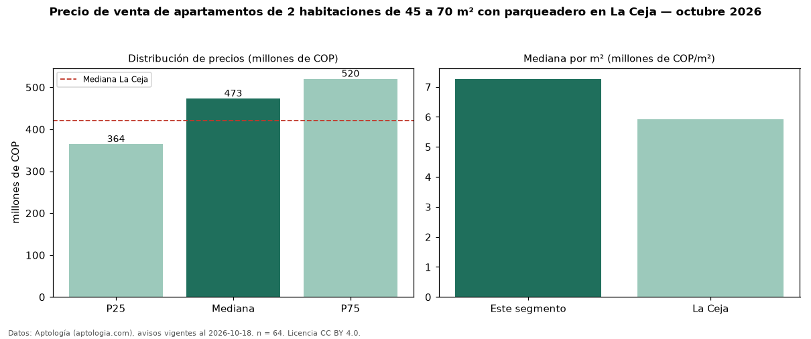

Precio de venta de apartamentos de 2 habitaciones de 45 a 70 m² con parqueadero en La Ceja — octubre 2026
Con 64 avisos vigentes, el precio mediano de apartamentos de 2 habitaciones de 45 a 70 m² con parqueadero en venta en La Ceja es COP 473 millones. Frente a la mediana de los apartamentos de 2 habitaciones de 45 a 70 m² en venta de La Ceja (COP 350 millones, n = 105), queda 35 % por encima; este segmento reúne el 61 % de esos avisos. Por metro cuadrado, la mediana es COP 7,26 millones/m² (n = 64), 18 % por encima de los apartamentos de 2 habitaciones de 45 a 70 m² en venta de La Ceja (COP 6,15 millones/m²). El área mediana anunciada es 64 m². La administración mediana declarada es COP 280.000 al mes (n = 29). El estrato más frecuente es 4 (51 % de los avisos con estrato). La mediana de todos los apartamentos en venta de La Ceja es COP 420 millones (+13 % de diferencia). La mitad central de los avisos va de COP 364 millones a COP 520 millones (razón 1,4), una dispersión moderada. Datos: Aptología (aptologia.com), CC BY 4.0 — https://www.aptologia.com/venta/la-ceja. Archivos: PDF, CSV con las cifras y gráfica PNG.

| Avisos únicos | 64 |
|---|---|
| Percentil 25 | COP 364.250.000 |
| Mediana | COP 473.000.000 |
| Percentil 75 | COP 520.000.000 |
| Mediana por m² | COP 7.264.335 |
Fuente: avisos vigentes de portales inmobiliarios recopilados por Aptología, deduplicados (mínimo 30 avisos únicos por celda). Precios pedidos, no cerrados. Fecha: 2026-10-18.